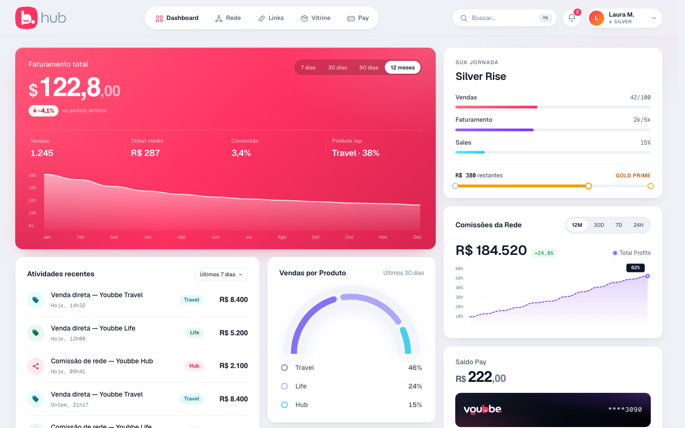

[Problem statement — to define.]

Crypto apps overwhelm newcomers with jargon, addresses, and irreversible mistakes. Akrus needed to feel as safe and obvious as sending a text message. [Replace with the real challenge.]
of new users dropped off before their first transaction. [placeholder metric]
Users feared sending funds to the wrong address. [placeholder insight]
Gas, slippage, wallets — words without meaning to most. [placeholder insight]
Transactions felt like a black box after tapping send. [placeholder insight]
Every technical term replaced with what it means to a human. [placeholder]
A full visual preview before anything irreversible happens. [placeholder]
Real-time progress so the transaction never feels like a void. [placeholder]
Early flow exploration.
Low-fi transaction screen.
Confirmation pattern.
Final visual direction.
"[Client quote placeholder — what the impact felt like from their side.]"
— Client name, Role
What I'd do differently: [placeholder reflection on what you'd improve next time.]